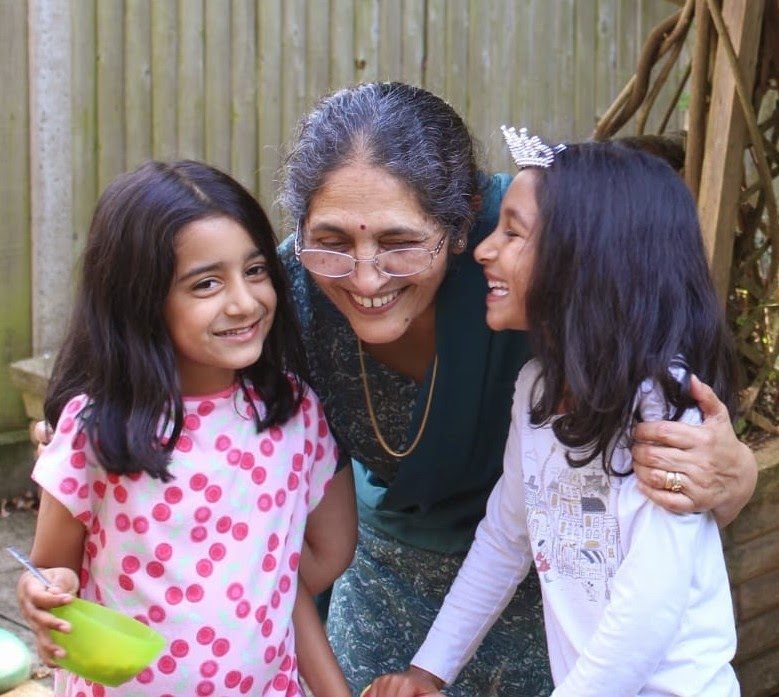
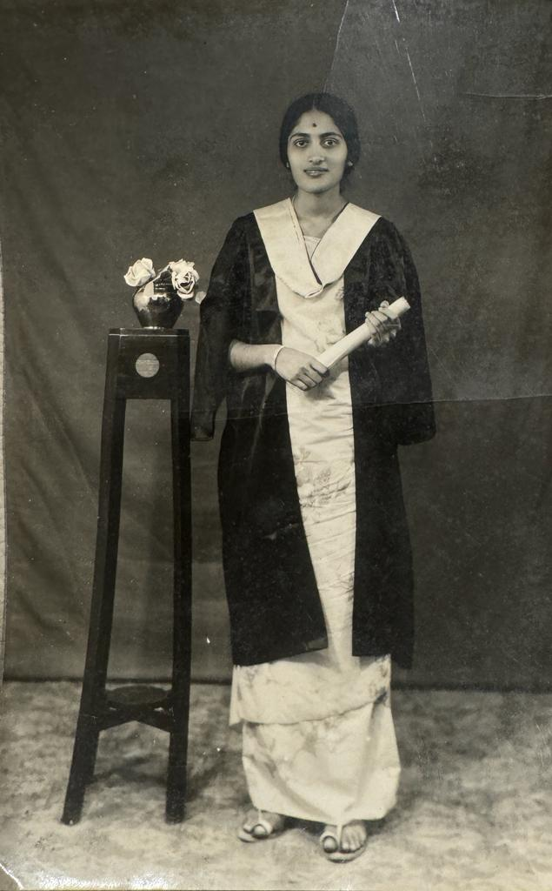

Our Inspiration
Pathways to Success India was founded in honor of Dr. Nirmala Somaiah, a remarkable woman who championed education access for all, regardless of socioeconomic or gender barriers. Dr. Somaiah completed her PhD during a time when women faced significant educational barriers, paving the way for future generations.
Our founders, Maya Ramesh and Mira Pemmanda, were deeply inspired by their grandmother's legacy and motivated by witnessing the lack of resources in a school near her home in Coorg, India. They realized that while they had access to excellent educational opportunities, countless children in underprivileged communities did not.
Determined to continue their grandmother's mission and create lasting change, they established Pathways to Success India to provide educational opportunities for underprivileged children and low-income families across India.

Our Mission
Pathways to Success India is dedicated to empowering underprivileged schools across India by providing innovative, locally-driven solutions that enhance health education, STEM learning, and community development. We believe that every child deserves the opportunity to succeed regardless of their background, and we are committed to breaking the cycle of poverty by providing the tools, knowledge, and resources necessary to build pathways to success—one school at a time.
Our Core Values
Impact-Driven
Every decision we make is guided by its potential to create meaningful, measurable impact in children's lives.
Transparency
We maintain complete transparency with our donors, partners, and beneficiaries about how funds are used and results achieved.
Sustainability
We focus on creating long-term, sustainable solutions rather than temporary fixes that truly transform communities.
Compassion
We approach our work with empathy and respect for the communities we serve, always putting children's needs first.
Innovation
We continuously seek innovative approaches to educational challenges and embrace new technologies and methodologies.
Excellence
We strive for excellence in everything we do, from program design to implementation and impact measurement.
Meet Our Founders
Maya Ramesh
Co-Founder & Director
Maya is a 16-year-old UK high school student studying A-Levels in mathematics, further mathematics, biology, and chemistry. Beyond academics, she competes in tennis and netball, and enjoys STEM competitions, baking, and playing guitar. Inspired by her grandmother's legacy, Maya co-founded Pathways to Success India to help underprivileged children access the educational opportunities she has been fortunate to experience.
Mira Pemmanda
Co-Founder & Director
Mira is a 16-year-old US student passionate about STEM, with particular interests in mathematics, physics, biology, and engineering. She is a track athlete competing in the 200m, 400m, and relays, with aspirations to pursue biomedical engineering. Motivated by witnessing educational inequality in India and inspired by her grandmother's dedication to education, Mira co-founded this organization to create lasting change in underprivileged communities.
In Loving Memory

Dr. Nirmala Somaiah
Dr. Nirmala Somaiah was a pioneering educator who completed her PhD during a time when women faced significant barriers to higher education. She championed education access for all, regardless of socioeconomic status or gender. Her unwavering commitment to empowering others through education inspired her granddaughters to establish Pathways to Success India in her honor, continuing her legacy of breaking down barriers to education.
Our Partners & Supporters
We're grateful to work with amazing organizations, schools, and individuals who share our vision of educational equality.